캐릭터·아이템 만드는 법
동작마다 PNG 한 장. 프레임을 가로로 이어 붙여요.
ChatGPT·Claude 에 붙여 넣으면 이 규격대로 만들어 줘요.
올리기
트레이 메뉴 "캐릭터 > 만들기…"에서 캐릭터·아이템·이모트 탭을 고르고 "+ 새로 만들기". 이름을 쓰고 동작마다 PNG 를 골라요. fps 는 권장값이 채워져 있어요. 아이템은 종류(던질 것·먹이·응가)와 효과음 wav 도 고를 수 있어요. 저장하면 내 목록에 생기고, 같은 곳에서 고치거나 지워요.
친구 화면에는 친구가 "캐릭터 바꾸기…" 창을 열거나 트레이 "캐릭터 > 새로 받기"를 누를 때 들어가요. 내가 고른 캐릭터는 바로 보여요.
먹이 아이템은 친구를 우클릭해 "먹이"에서 고른 뒤 친구를 클릭하면 날아가요. 다시 "던질 것"을 고를 때까지 클릭마다 먹이를 줘요.
응가 아이템은 fly 그림이 바닥에 떨어진 응가로 그려져요(던지거나 먹이로 쓰이지 않아요). 고른 응가로 내 캐릭터가 배부를 때 응가해요. 친구가 아직 안 받은 응가는 받을 때까지 기본 응가로 보여요.
이모트
"이모트" 탭에서 GIF·WebP·APNG·PNG·JPG 를 골라요. 앱이 24px 로 줄이고 16프레임까지 골라 원래 속도대로 저장해요(원본 20MB, 가로·세로 2048px 까지). 이름은 그룹 안에서 겹치면 안 돼요.
쓰는 곳: 내 캐릭터 우클릭 이모트 메뉴(최근 10개)와 "더보기…"(⌃⌥⌘E, Windows 는 Ctrl+Alt+E) 고르기 창은 머리 위에 띄워요. 메시지에 : 를 치면 이름이 떠서 고르면 말풍선 안에 :이름: 으로 들어가요. 상태·닉네임 창의 이모지 버튼으로 상태에도 넣어요. 같은 그룹 친구만 보여요.
규격
- 프레임 32×32, 동작당 최대 8프레임 (4프레임이면 128×32)
- 투명 배경, 파일당 200KB 이하 (넘으면 앱이 다시 저장해 줄여요. 효과음 wav 는 50KB)
- 오른쪽을 보게 그려요(왼쪽은 앱이 뒤집어요). 발은 맨 아래 줄에, 가로 가운데
캐릭터 동작
idle, walk, sleep 만 있으면 돼요. 나머지는 없으면 대신 쓰는 동작이 있어요. offline 이 없으면 오프라인일 때 돌로 바뀌어요.
| 동작 | 언제 | 권장 | 없으면 |
|---|---|---|---|
idle 필수 | 가만히 | 2장, 2fps | |
walk 필수 | 걸을 때 | 4장, 6fps | |
sleep 필수 | 30분 자리 비움 (Zzz 는 앱이 그림) | 2장, 1fps | |
poked | 콕 찔림 | 2장, 8fps | idle |
throw | 던질 때 | 3장, 10fps | idle |
hit | 맞았을 때 | 2장, 8fps | poked |
jump | 피할 때, 점프 동작 | 2장, 8fps | idle |
eat | 먹이 받을 때, 냠냠 동작 | 3장, 6fps | happy |
wave | 친구 접속 인사, 안녕 동작 | 3장, 6fps | happy |
happy | 쓰다듬기, 기쁨 동작 | 2장, 4fps | idle |
offline | 오프라인(쓰러진 모습) | 1장, 1fps | 돌 |
아이템 동작
| 동작 | 언제 | 권장 |
|---|---|---|
fly 필수 | 날아가는 동안 (회전이 잘 어울림). 응가는 바닥에 놓인 모습 | 4~8장, 12fps (응가는 1장) |
impact | 맞는 순간 | 3장, 12fps |
예시: 뿅망치
거북이의 기본 아이템이에요. fly 는 한 장뿐이지만 앱이 날아가는 동안 돌려 줘요(먹이는 안 돌려요).
| 동작 | 움직임 | 올리는 모양 (4배 확대) |
|---|---|---|
fly날아가는 동안 | 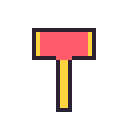 | |
impact맞는 순간 | 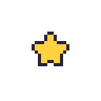 | 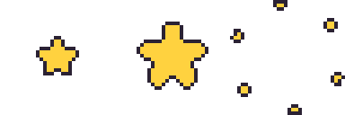 |
실제 크기로 받기: fly, impact, 전체 받기(zip)


응가
응가 아이템은 fly 한 장이면 돼요. 바닥에 놓인 모습으로, 캐릭터보다 작게 회전 없이 그려져요. 맨 아랫줄에 닿게 그리고, 위는 비워 둬도 돼요. 납작할수록 귀여워요. 아래는 기본 응가예요.
| 동작 | 움직임 | 올리는 모양 (4배 확대) |
|---|---|---|
fly바닥에 놓인 모습 | 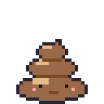 |
실제 크기로 받기: fly

예시: 떠기
펭귄 인형을 보고 만든 떠기의 모든 동작이에요. 위 표의 권장 장수 그대로고, 같은 몸에 포즈만 바꿔 그려서 동작끼리 모양이 어긋나지 않아요.
| 동작 | 움직임 | 올리는 모양 (4배 확대) |
|---|---|---|
idle가만히 | 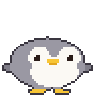 | 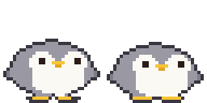 |
walk걸을 때 | 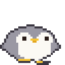 | 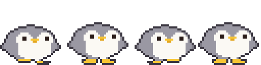 |
sleep잠 | 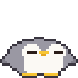 | 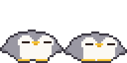 |
poked콕 찔림 | 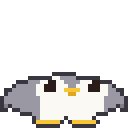 | 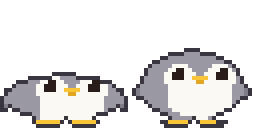 |
throw던질 때 | 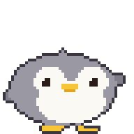 | 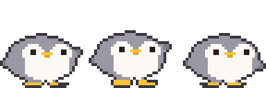 |
hit맞았을 때 | 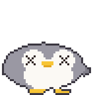 | 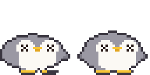 |
jump피할 때·점프 | 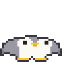 | 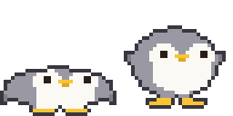 |
eat먹이 받을 때 | 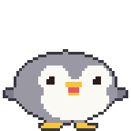 | 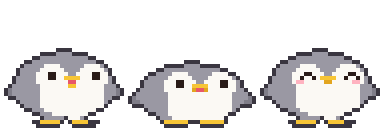 |
wave인사 | 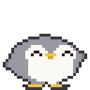 | 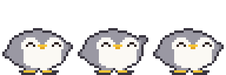 |
happy쓰다듬기 | 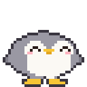 | 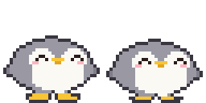 |
offline오프라인 | 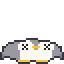 |
실제 크기로 받기: idle, walk, sleep, poked, throw, hit, jump, eat, wave, happy, offline, 전체 받기(zip)


템플릿
만들기 창의 "템플릿 받기"로 동작마다 앱 햄찌(아이템은 도토리) 예시가 들어간 템플릿을 받을 수 있어요. 빈 템플릿은 여기서: 2프레임, 4프레임, 8프레임, 전체 받기(zip)


아래 레이어로 깔고 그린 뒤 템플릿 레이어는 끄고 저장해요. 빨간 줄이 발 기준선이에요.
그리는 도구: Piskel(웹, 무료), LibreSprite(무료), Aseprite(유료)
AI 로 만들기
이미지 AI 는 32픽셀을 정확히 못 지켜요. 크게 만들고 줄여서 다듬어요.
- 아래 프롬프트로 생성
- 프레임별로 32×32 로 줄이기. 보간 방식은 꼭 최근접 이웃(Nearest Neighbor), 아니면 흐려져요.
- 배경 투명 처리, 프레임 위치 맞추기
설치 없이 브라우저에서:
- Photopea(무료, 포토샵과 비슷): 줄이기는 "이미지 > 이미지 크기"에서 리샘플을 Nearest Neighbor 로. 배경은 자동 선택 도구(허용치 0, 안티 앨리어스 끔)로 배경을 누르고 Delete, PNG 로 내보내기.
- remove.bg(무료): 배경만 지울 때. 가장자리가 흐려질 수 있어 줄이기 전 큰 이미지에 써요.
기본 모습
Pixel art sprite of a cute chubby [animal], chibi, side view facing right, full body, 32x32 pixel grid, about 8 colors, 1px dark outline, flat shading, transparent background, feet on the bottom edge, centered, no text, no shadow
동작 시트 (위 결과를 참고 이미지로 함께)
Pixel art sprite sheet of the same character, [N] frames in one horizontal row, each frame exactly 32x32 pixels, no gaps, facing right, animation: [motion], same size and position in every frame, feet on the bottom edge, 1px dark outline, limited palette, transparent background, no text
| 동작 | [N] | [motion] | 떠기 |
|---|---|---|---|
idle | 2 | gentle breathing, body down 1px in frame 2 | |
walk | 4 | walk cycle: left foot forward, body up, right foot forward, body up | |
sleep | 2 | eyes closed, body rises and falls 1px | |
poked | 2 | squashed flat, then back to normal | |
throw | 3 | wind up, then swing one arm forward | |
hit | 2 | knocked back, dizzy swirl eyes | |
jump | 2 | crouch, then stretch up | |
eat | 3 | mouth open, chewing, cheeks puffed | |
wave | 3 | one paw raised, waving | |
happy | 2 | smiling closed eyes, tiny heart | |
offline | 1 | knocked out, squashed flat on the ground, X eyes |
아이템
Pixel art game item, [item], [N] frames in one horizontal row, each 32x32 pixels, no gaps, spinning 360 degrees, 1px dark outline, transparent background, no text
응가
Pixel art of a cute squat swirl poop with a tiny face, colored and decorated like [character] (one feature such as ears or beak), single 32x32 frame, front view, resting on the bottom edge, 1px dark outline, limited palette, transparent background, no text
코드를 실행하는 AI (ChatGPT, Claude 등)
격자가 정확히 나와요. 몸·눈·발을 타원 같은 도형으로 정의하고, 포즈 값(몸 높이, 눈 모양, 발 들기)을 받아 한 장을 그리는 함수 하나로 모든 동작을 만들게 하면 동작끼리 모양이 어긋나지 않아요. 사진이나 그림을 같이 주면 색과 생김새를 따라 그려요.
Write and run a Python (Pillow) script that draws a pixel art [animal] (see the attached picture) for a 32x32 desktop pet. Build each frame from simple shapes (ellipses for body, face, feet) in ONE function draw(pose) that takes pose values like bob, eyes, foot lift, so every animation reuses the same shapes. Add a 1px dark outline automatically around the filled pixels. Facing right, feet touching row 31, the 4 corner pixels transparent. Save one horizontal strip PNG per animation (1x, frames 32x32, no gaps): idle 2, walk 4, sleep 2, poked 2, throw 3, hit 2, jump 2, eat 3, wave 3, happy 2, offline 1. Show me an 8x preview, then let me ask for changes.
AI 가 쓰는 코드는 대략 이런 모양이에요(떠기, 11개 동작 전부). 위 예시의 떠기 그림이 이 코드로 나온 것과 같아요. Pillow 가 있으면 실행해서 동작마다 PNG 가 저장돼요.
COLORS = {'K': '#3a3640', 'G': '#9a98a3', 'g': '#7f7d88', 'W': '#fbf9f4', 'Y': '#f7c535',
'y': '#e2a51f', 'E': '#2a1c18', 'P': '#ffb3c0', 'R': '#e8586a'}
def oval(x, y, cx, cy, rx, ry):
return ((x + .5 - cx) / rx) ** 2 + ((y + .5 - cy) / ry) ** 2 <= 1
def tri(x, y, a, b, c):
px, py = x + .5, y + .5
s = lambda p, q: (px - q[0]) * (p[1] - q[1]) - (p[0] - q[0]) * (py - q[1])
d = (s(a, b), s(b, c), s(c, a))
return not (min(d) < 0 and max(d) > 0)
# 눈 한쪽. dx, dy 는 눈 왼쪽 위에서 떨어진 칸
def eye(dx, dy, kind):
if kind == 'wide':
return ('W' if dx == dy == -1 else 'E') if abs(dx) <= 1 and abs(dy) <= 1 else None
hit = {'open': 0 <= dx <= 1 and 0 <= dy <= 1,
'closed': -1 <= dx <= 2 and dy == 1,
'happy': (dy == 0 and dx in (0, 1)) or (dy == 1 and dx in (-1, 2)),
'hurt': 0 <= dy <= 2 and abs(dx) == abs(dy - 1)}[kind]
return 'E' if hit else None
# 포즈 값만 받아 한 장을 그린다. 모든 동작이 같은 모양을 쓴다.
# squash: + 납작, - 길쭉. feet: 발 들기. flip: 날개 올리기. lean: 몸 좌우 이동
def draw(bob=0, squash=0, feet=(0, 0), flip=(0, 0), eyes='open', mouth='', blush=False, lean=0):
ry, rx = 9 - squash, 13 + squash * .8
by = 30.4 + min(bob, 1) - ry + max(bob - 1, 0)
cx = 16 + lean
ey = round(by - 3)
def foot(fcx, x, y, lift):
r = y - (31 - lift)
return -1 + min(0, bob + lift) <= r <= 0 and abs(x + .5 - fcx) <= (2.5 if r == 0 else 3.5)
def pixel(x, y):
body = oval(x, y, cx, by, rx, ry) or tri(
x, y, (cx - 3.5, by - ry + 2), (cx + 3.5, by - ry + 2), (cx, by - ry - .8))
fin = (oval(x, y, cx - rx + .3, by + 1.5 - flip[0], 2.6, 1.8)
or oval(x, y, cx + rx - .3, by + 1.5 - flip[1], 2.6, 1.8))
paw = foot(12, x, y, feet[0]) or foot(21, x, y, feet[1])
# 인형처럼 발이 몸 앞으로 나와 보이게 몸보다 먼저 칠한다
if paw and y >= 30 + min(bob, 0) - max(feet):
return 'Y'
if not body:
return 'g' if fin else 'Y' if paw else '.'
fx = x - 2 - lean # 얼굴은 2칸 오른쪽을 본다
e = eye(fx - 10, y - ey, eyes) or eye(fx - 21, y - ey, eyes)
if e:
return e
if y == ey + 1 and 14 <= fx <= 17:
return 'Y'
if y == ey + 2 and 15 <= fx <= 16:
return 'R' if mouth else 'y'
if mouth == 'open' and y == ey + 3 and 15 <= fx <= 16:
return 'Y'
if mouth == 'chew' and y == ey + 2 and fx in (14, 17):
return 'y'
if blush and y == ey + 2 and fx in (8, 9, 22, 23):
return 'P'
face = (oval(fx, y, 11, by - 2, 3.8, 3.6) or oval(fx, y, 21, by - 2, 3.8, 3.6)
or oval(fx, y, 16, by + 3, 8.2, 5.2))
return 'W' if face else 'G'
g = [[pixel(x, y) for x in range(32)] for y in range(32)]
solid = lambda x, y: 0 <= x < 32 and 0 <= y < 32 and g[y][x] != '.'
edge = lambda x, y: not all(solid(x + a, y + b) for a, b in ((1, 0), (-1, 0), (0, 1), (0, -1)))
return [''.join('K' if c != '.' and edge(x, y) else c for x, c in enumerate(row)) for y, row in enumerate(g)]
ANIMS = {
'idle': [draw(), draw(bob=1)],
'walk': [draw(feet=(1, 0), lean=-1), draw(bob=-1), draw(feet=(0, 1), lean=1), draw(bob=-1)],
'sleep': [draw(eyes='closed', bob=1, squash=1), draw(eyes='closed', bob=2, squash=1)],
'poked': [draw(eyes='wide', squash=3), draw(eyes='wide')],
'throw': [draw(flip=(0, 4), lean=-1), draw(flip=(0, 5), lean=-1, bob=-1), draw(flip=(0, -1), lean=1)],
'hit': [draw(eyes='hurt', lean=-2, squash=1), draw(eyes='hurt', bob=1)],
'jump': [draw(squash=3, flip=(-1, -1)), draw(bob=-3, squash=-1, feet=(2, 2), flip=(3, 3))],
'eat': [draw(mouth='open'), draw(mouth='chew', bob=1, squash=1), draw(eyes='happy', blush=True)],
'wave': [draw(flip=(0, 3), eyes='happy'), draw(flip=(0, 6), eyes='happy'), draw(flip=(0, 3), eyes='happy')],
'happy': [draw(eyes='happy', blush=True, bob=-1), draw(eyes='happy', blush=True)],
'offline': [draw(eyes='hurt', squash=3, bob=1, flip=(-1, -1))],
}
# 동작마다 가로 스트립 PNG 한 장(1배, 프레임 32x32)
def save(name, frames):
from PIL import Image, ImageColor
img = Image.new('RGBA', (32 * len(frames), 32))
for i, g in enumerate(frames):
for y, row in enumerate(g):
for x, c in enumerate(row):
if c != '.':
img.putpixel((i * 32 + x, y), ImageColor.getrgb(COLORS[c]))
img.save(name + '.png')
if __name__ == '__main__':
for name, frames in ANIMS.items():
save(name, frames)
올리기 전 확인
- 높이 32, 너비 32의 배수, 8프레임 이하
- 배경 투명, 템플릿 선 없음
- 오른쪽을 보고, 발이 맨 아래, 프레임마다 위치 같음